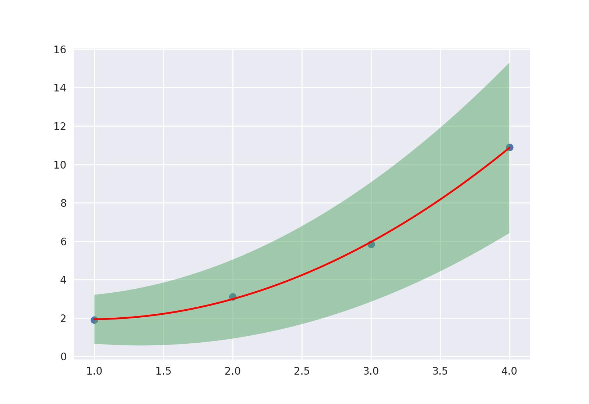

Polinomial
Regressão polinomial usando o método dos mínimos quadrados, o código é escrito usando a função
polyfit do numpy, a sua grande vantagem é que são aceitas Medidas nos arrays e .
É retornado os coeficientes do polinômio como Medidas com seus erros estimados, um detalhe é que os coeficientes são ordenados com grau crescente ( e não )
x_dados=np.array([1, 2, 3, 4])
y_dados=np.array([1.9 , 3.1 , 5.85 , 10.9])
c,b,a= regressao_polinomial(x_dados,y_dados,grau=2)
#c=(2.8±0.4) b=(-1.8 ±0.4) a=(0.96 ±0.08)
Retornar função
Para criação de gráficos, às vezes é mais prático a regressao_polinomial retornar
um polinomio do que os coeficientes, com o parametro extra func=True isso
é possível. É retornado um MPolinomio que atua como função
1 2 3 4 5 | |
o MPolinomio quando calculado nos valores de x, irá retornar um array de Medidas que junto com os métodos CurvaMin e CurvaMax é possível criar facilmente um gráfico com o erro estimado do polinômio
6 7 8 9 | |
